COSMO
VÓRTEX

No cabeçário da página, estão localizados os nossos contatos, os quais poderão ser enviadas mensagens de dúvidas. Abaixo há um vídeo sobre a explicação e a funcionalidade do projeto.
O que é pesquisa-ação e por que devo responde-la?
A pesquisa-ação é uma abordagem de pesquisa que se caracteriza pela interação direta entre o pesquisador e o público-alvo. Essa metodologia é fundamental para evidenciar a eficácia do nosso projeto, utilizando dados estatísticos como comprovação. Por meio da pesquisa-ação, podemos avaliar se atingimos nosso objetivo de promover a conscientização científica. Cada resposta coletada é de grande valor para nós. Agradecemos pela colaboração!
Nosso projeto já alcançou um grau de reconhecimento. Veja!
Professor orientador de projetos educacionais com foco na metodologia STEAM (Science, Technology, Engineering, Arts, and Mathematics), destacando-se por seu engajamento com estudantes em projetos interdisciplinares que integram áreas diversas para desenvolver a criatividade e a ciência, a resolução de problemas e o pensamento crítico. Entre os projetos orientados, o Cosmovortex se destaca, tendo sido apresentado na primeira mostra científica para a indústria do colégio SESI, realizada em conjunto com a etapa estadual do campeonato de robótica. Esse projeto exemplifica a aplicação prática dos conceitos STEAM em contextos reais e científicos.
Assim como o mestre Aristóteles citou: "O começo de todas as ciências é o espanto de as coisas serem como são." Inspirados na descoberta e completo entendimento de conceitos da física moderna, já trabalhados por nomes como Albert Einstein e o inspirador Richard Feynman, Isabele, Leonardo e Augusto, alunos que diga-se de passagem são algumas das mentes mais brilhantes e inspiradoras com quem tive o prazer de trabalhar, conseguiram construir este projeto para disseminar a ciência ao alcance de todos. Cosmovórtex é inspirador, concreto e genial.
PARCERIAS:
